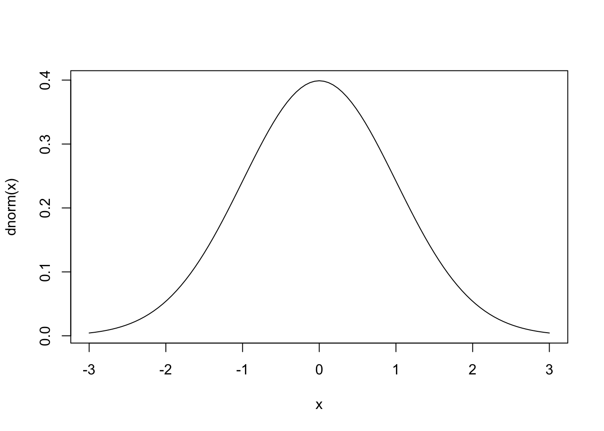

# Cada execução desse código resultará em uma sequência diferente de 5 números.
rnorm(5)[1] 0.7819179 -1.1387334 -0.1326681 0.7352568 -1.3003365Distribuições teóricas são modelos matemáticos que descrevem como os dados se comportam. Elas são importantes porque permitem a modelagem e previsão de fenômenos naturais, fazendo inferências sobre uma população a partir de uma amostra e testando hipóteses para determinar a significância dos resultados observados.
Na medicina, esses conceitos são aplicados de várias maneiras. Ensaios clínicos utilizam distribuições teóricas para determinar a significância dos resultados dos testes de tratamento, por exemplo, modelando a distribuição dos resultados com a distribuição normal. Estudos epidemiológicos usam distribuições para modelar a incidência e prevalência de doenças, como a distribuição de Poisson para modelar o número de novos casos em um determinado período. A análise de sobrevivência utiliza a distribuição exponencial para modelar o tempo de sobrevivência dos pacientes após um tratamento ou o tempo até a ocorrência de um evento específico, como a recaída de uma doença. Distribuições teóricas de probabilidade são, portanto, elementos fundamentais da análise estatística.
O R, sendo uma linguagem estatística, naturalmente possui diversos comandos para criar conjuntos de números aleatórios com distribuições de diversos tipos. Para cada distribuição o R possui 4 funções principais: densidade de probabilidade (d), probabilidade cumulativa (p), quantiles (q) e números randomizados (r). Cada uma dessas funções é obtida colocando-se a letra correspondente (d, p, q, r) como prefixo do nome da distribuição no R. A tabela abaixo mostra algumas das distribuições e as funções associadas.
A função set.seed() do R é utilizada para definir a semente (ou seed, em inglês) de geração de números aleatórios, ou seja, o ponto de partida para a geração de números aleatórios. Isso é particularmente útil quando você precisa garantir que seus resultados sejam reprodutíveis. Ao definir uma semente específica, qualquer operação subsequente que envolva a geração de números aleatórios produzirá os mesmos resultados em diferentes execuções, desde que a mesma semente seja usada.
Sem definir uma semente, os resultados da simulação mudarão a cada execução. No entanto, ao usar set.seed(), você pode garantir que os resultados sejam consistentes.
# Cada execução desse código resultará em uma sequência diferente de 5 números.
rnorm(5)[1] 0.7819179 -1.1387334 -0.1326681 0.7352568 -1.3003365# Cada execução desse código resultará sempre em na mesma sequencia de 5 números.
# Alterar o argumento da função set.seed irá mudar a sequencia de números.
set.seed(1)
rnorm(5)[1] -0.6264538 0.1836433 -0.8356286 1.5952808 0.3295078A semente deve ser sempre um número inteiro. Diferentes números de sementes levarão a diferentes sequências de números aleatórios. Observe que set.seed() não altera os números gerados globalmente para toda a sessão R, mas garante que a sequência de números aleatórios gerados após definir a semente seja a mesma.
runifA função runif() gera um conjunto randomizado de números a partir de um distribuição uniforme. Os argumentos dessa função são: a quantidade de números, o valor mínimo e o valor máximo.
Veja abaixo como criar um conjunto randomizado de 20 números distribuídos de forma uniforme entre 0 e 1.
ru1 <- runif(n = 20, min = 0, max = 1)
ru1 [1] 0.20597457 0.17655675 0.68702285 0.38410372 0.76984142 0.49769924
[7] 0.71761851 0.99190609 0.38003518 0.77744522 0.93470523 0.21214252
[13] 0.65167377 0.12555510 0.26722067 0.38611409 0.01339033 0.38238796
[19] 0.86969085 0.34034900podemos arrendondar esses valores com a função round().
# arredondando para 2 casas decimais
round(ru1, 2) [1] 0.21 0.18 0.69 0.38 0.77 0.50 0.72 0.99 0.38 0.78 0.93 0.21 0.65 0.13 0.27
[16] 0.39 0.01 0.38 0.87 0.34Podemos visualizar um histograma dessa distribuição com a função hist(). Veja que com poucos elementos a distribuição ainda não parece uniforme.
hist(ru1)Entretanto, a medida que aumentando o número de elementos, a forma da distribuição se parece cada vez mais com uma distribuição uniforme. Veja no código abaixo um conjunto randomizado de 10, 100, 1000 e 10.000 elementos criados com a função runif() e os histogramas dessas distribuições.
ru1 <- runif(n = 10, min = 0, max = 1)
ru2 <- runif(n = 100, min = 0, max = 1)
ru3 <- runif(n = 1000, min = 0, max = 1)
ru4 <- runif(n = 10000, min = 0, max = 1)
par(mfrow = c(2, 2)) # cria uma matrix 2x2 para plotar os gráficos
hist(ru1)
hist(ru2)
hist(ru3)
hist(ru4)dunifA função dunif() calcula a função de densidade de probabilidade (PDF) da distribuição uniforme, ou seja, a probabilidade de que uma variável aleatória seja igual a um determinado valor. A função dunif() tem três argumentos:
Veja como usar a função dunif() para calcular o PDF de uma distribuição uniforme entre 0 e 100 no valor 2:
dunif(x=5, min=0, max=100)[1] 0.01Isso significa que a probabilidade de uma variável aleatória dessa distribuição ser igual a 5 é 0.01.
punifA função punif() calcula a função de densidade de probabilidade cumulativa (CDF) da distribuição uniforme, ou seja, a probabilidade de que uma variável aleatória seja menor ou igual a um determinado valor.
A função punif() requer três argumentos:
Veja um exemplo de como usar a função punif() para calcular o CDF de uma distribuição uniforme entre 0 e 100 no valor 5:
punif(5, min = 0, max = 100)[1] 0.05qunifA função quinf() calcula a função quantil da distribuição uniforme. A função quantil é o inverso do CDF. Dada um probabilidade como entrada, a função retorna o valor que tem essa probabilidade.
A função quinf() requer três argumentos:
Veja exemplo de como usar a função quinf() para calcular o quantil de uma distribuição uniforme entre 0 e 100 na probabilidade de 0.05:
qunif(0.05, min = 0, max = 100)[1] 5A mais importante das distribuições de probabilidade teóricas é a distribuição normal. Diversos fenômenos na natureza seguem um padrão de distribuição simétrico e em forma de sino. Devido a essa forma, essa distribuição de frequências ficou conhecida como distribuição em sino (bell shaped). Como tantos fenômenos são distribuídos dessa forma, a busca por um modelo matemático para modelar essa distribuição tem uma longa e interessante trajetória na ciência, envolvendo diversos grandes matemáticos. O modelo matemático dessa curva se começou a ser construído por volta do ano de 1733 com o trabalho do matemático Abraham Demoivre, quando buscava modelos para prever resultados de jogos de azar e em 1786 por Pierre Laplace, um astrônomo e matemático. No entanto, a curva normal como modelo para a distribuição de erros na teoria científica é mais comumente associada a um astrônomo e matemático alemão, Karl Friedrich Gauss, que encontrou uma nova derivação da fórmula para a curva em 1809 (Gordon 2006). Por esse motivo, a curva normal às vezes é referida como a curva “Gaussiana”. Em 1835, outro matemático e astrônomo, Lambert Quetelet, usou o modelo para descrever características fisiológicas e sociais humanas. Quetelet acreditava que “normal” significava média e que os desvios da média eram os erros da natureza. Apesar da visão distorcida de Quetelet, ele foi o primeiro matemático a estender o uso da curva de distribuição normal para os campos das ciências sociais e biomédicas (Stahl 2006).
rnormA função rnorm() gera um conjunto de números randomizados a partir de um distribuição normal. Os argumentos dessa função são: a quantidade de números, a média e o desvio padrão. Se introduzirmos apenas a quantidade de números, a função rnorm() utiliza a distribuição normal padrão, com média = 0 e desvio padrão = 1.
Gerando um conjunto randomizado de 1000 números distribuídos de forma normal com média = 0 e desvio padrão = 1.
set.seed(100)
rn1 <- rnorm(n = 1000, mean = 0, sd = 1)
plot(density(rn1)) Poderíamos também escrever a função acima com os argumentos pela ordem:
set.seed(100)
rn1 <- rnorm(1000, 0, 1)
plot(density(rn1)) 
# Inserindo apenas o número de valores a serem gerados
# Nesse caso a função rnorm usa os valores default para media e desvio padrão
# media = 0 e desvio padrão = 1 (curva normal padrão)
set.seed(100)
rn1 <- rnorm(1000)
plot(density(rn1)) 
dnormA função dnorm() é a função de densidade de probabilidade (PDF) de uma distribuição normal e retorna o valor da densidade de probabilidade de um valor x, ou seja, a altura da curva normal naquele ponto. Tem como argumentos o valor x e a média e o desvio padrão da curva. O primeiro argumento é o ponto no eixo x do qual se pretende saber o valor da densidade de probabilidade, o segundo argumento é a média e o terceiro argumento é o desvio padrão.
Por exemplo, para saber o valor da densidade de probabilidade de x=2, numa curva normal padrão (média =0 e desvio padrão =1), o código seria:
dnorm(2, mean = 0, sd = 1)[1] 0.05399097Numa curva normal padrão não precisamos informar os valores da média e do desvio padrão, bastando inserir o ponto do eixo x.
dnorm(2)[1] 0.05399097A função dnorm(x) pode ser usada também para gerar todos os pontos da curva normal. Isso pode ser útil para desenhar gráficos da curva normal com códigos bem curtos, quando a associamos à função curve(), como mostrado nos códigos abaixo.
curve(dnorm(x), -3, 3)
curve(dnorm(x, mean = 10, sd = 2), 4, 16)curve(dnorm(x, mean= 100, sd= 10), 50, 150)Podemos inserir várias curvas num mesmo gráfico com o argumento add=TRUE.
curve(dnorm(x, sd=1), col="black", xlim=c(-10,10), ylim=c(0,0.4), ylab="Densidade")
curve(dnorm(x, sd=2), col="brown", xlim=c(-10,10), ylim=c(0,0.4), ylab="Densidade", add=TRUE)
curve(dnorm(x, sd=3), col="blue", xlim=c(-10,10), ylim=c(0,0.4), ylab="Densidade", add=TRUE)
curve(dnorm(x, sd=4), col="red", xlim=c(-10,10), ylim=c(0,0.4), ylab="Densidade", add=TRUE)
curve(dnorm(x, sd=5), col="green", xlim=c(-10,10), ylim=c(0,0.4), ylab="Densidade", add=TRUE)
legend(x = 2.4, y = 0.41, lty=1,
legend = c("σ = 1", "σ = 2", "σ = 3", "σ = 4", "σ = 5"),
col = c("black", "brown", "blue", "red", "green"))pnormA função pnorm(x) é utilizada para calcular a função de distribuição acumulada (CDF) de uma distribuição normal. Em outras palavras, ela fornece a probabilidade de que uma variável aleatória com distribuição normal padrão seja menor ou igual a um determinado valor x. Do ponto de vista gráfico, essa função calcula área abaixo da curva normal, à esquerda de x, ou seja, a probabilidade de dados menores que x. O gráfico abaixo mostra a interpretação visual da função pnorm(x).
# calculando pnorm de x=2 na curva normal padrão
pnorm(2)[1] 0.9772499Observe que a função pnorm(x) usou os valores padrões de media = 0 e desvio padrão = 1. Caso seja necessário usar outros valores, basta inserir esses argumentos na função pnorm().
Vamos usar um estudo da ANAC (Agência Nacional de Aviação Civil) (Silva and Monteiro 2009) como exemplo. Nesse estudo foi a média da altura dos homens brasileiros usuários do sistema de aviação foi estimada em 173,1 cm com um desvio padrão de 7,3cm. Usando esses dados como exemplo, podemos calcular qual o percentual de homens dessa amostra com altura inferior a 190cm.
pnorm(190, mean=173.1, sd=7.3)[1] 0.9896954A função pnorm(x) calcula a área abaixo da curva À ESQUERDA do ponto x. Como a área total abaixo de uma curva normal é 1, Para saber a área à direita basta subtrair o resultado de 1, como feito abaixo:
1 - pnorm(190, mean=173.1, sd=7.3)[1] 0.01030459Ou seja, aproximadamente 1% dos homens brasileiros dessa amostra tem altura superior a 190cm.
qnormA função qnorm() faz o calculo inverso da função pnorm(). é utilizada para calcular o quantil (ou percentil) de uma distribuição normal. Isso significa que ela fornece o valor x tal que a área sob a curva normal à esquerda de x é igual a uma probabilidade especificada p. O argumento da função qnorm(p) é extamente essa probabilidade, o percentual abaixo da curva à esquerda do ponto x. O resultado dessa função é o valor no eixo x que delimita essa área.
Com essa função podemos nos perguntar qual deve ser a altura das portas de um avião para que 99% dos brasileiros usuários dos aeroportos possam passar pela porta de um avião sem ter de se abaixar? Ou seja, qual a medida da estatura abaixo do qual estão 99% dos brasileiros dessa amostra? Lembrando que a média da altura dos homens brasileiros usuários do sistema de aviação foi estimada em 173,1 cm com um desvio padrão de 7,3cm, o código fica assim:
qnorm(0.99, mean=173.1, sd=7.3)[1] 190.0823Essa análise pode ser visualizada no gráfico abaixo:
A distribuição t de Student (também conhecida como distribuição t) foi introduzida por William Sealy Gosset em 1908, sento usada para estimar a média de variáveis aleatórias normalmente distribuídas para as quais o tamanho da amostra é pequeno e o desvio padrão é desconhecido. A distribuição t parece muito semelhante à distribuição normal, e converge para a curva normal à medida que o tamanho da amostra aumenta.
rt()A função rt() cria conjunto randomizado de números a partir de um distribuição t de Student. Os argumentos dessa função são: a quantidade de números e os graus de liberdade (degrees of freedom - df).
set.seed(1)
x <- rt(n = 1000, df = 10)
plot(density(x))dt()As funções dt(), pt(), qt() funcionam da mesma forma que suas correspondentes na distribuição normal, como já discutido anteriormente, com a diferença de que o parâmetro da distribuição t são os graus de liberdade (degrees of freedom - df) e não a média e o desvio padrão.
A função dt() é a função de densidade de probabilidade (PDF) na curva de distribuição t. Tem como argumento o ponto no eixo x e os graus de liberdade e seu resultado é o valor da densidade de probabilidade, ou a altura da curva t nesse ponto.
Por exemplo, para saber o valor da densidade de probabilidade de x=2, numa curva de distribuição t com 5 graus de liberdade (df = 5), o código seria:
dt(x=2, df=5)[1] 0.06509031A função dt() pode ser usada também para gerar todos os pontos da curva, o que pode ser útil para desenhar gráficos da curva normal com códigos bem curtos, quando a associamos à função curve(), como mostrado nos códigos abaixo.
curve(dt(x, df = 5),
xlim = c(-4,4) )Podemos inserir várias curvas num mesmo gráfico, usando o argumento add=TRUE.
curve(dnorm(x), col="black", xlim=c(-5,5), ylim=c(0,0.4), ylab="Densidade")
curve(dt(x,df=20),col="brown", add=TRUE)
curve(dt(x,df=5), col="blue", add=TRUE)
curve(dt(x,df=2), col="red", add=TRUE)
curve(dt(x,df=1), col="green", add=TRUE)
legend(x = 2.4, y = 0.41, lty=1,
legend = c("normal curve","t, df=20","t, df=5","t, df=2","t, df=1"),
col = c( "black", "brown", "blue", "red", "green"))pt()A função pt(q) é utilizada para calcular a função de distribuição acumulada (CDF) da distribuição t de Student. Ela fornece a probabilidade de que uma variável aleatória com uma distribuição t de Student seja menor ou igual a um determinado valor x. Ou seja, calcula área abaixo da curva de distribuição t, à esquerda de q (quantile).
Os argumentos dessa função são o quantile (q) e os graus de liberdade da curva t (df). O código e o gráfico abaixo mostram o resultado da função pt() e a a interpretação visual da função.
pt(q = 2, df = 5)[1] 0.9490303qt()A função qt(), faz o inverso da função pt(): dada uma área abaixo da curva de distribuição t, a função retorna o quantile (q) que delimita essa área à esquerda. Os argumentos dessa função são a área em decimais (p) e os graus de liberdade da curva t (df). O resultado da função é o quantile.
qt(p = 0.9490303, df = 5)[1] 2.000001A distribuição qui-quadrado é frequentemente usada em testes estatísticos, como o teste de independência em tabelas de contingência ou o teste de ajuste (goodness-of-fit).
rchisq()A função rchisq() cria conjunto randomizado de números a partir de um distribuição Chi quadrado. Os argumentos dessa função são: a quantidade de números e os graus de liberdade (degrees of freedom - df).
set.seed(1)
y <- rchisq(n = 1000, df = 3)
plot(density(y))dchisq()A função dchisq() é utilizada para calcular a função densidade de probabilidade (PDF) de uma distribuição qui-quadrado (\(\chi^2\)). Ela retorna a densidade da função qui-quadrado para um dado valor x, ou seja, a altura da curva de densidade qui-quadrado naquele ponto específico.
Podemos usar a função dchisq() para construir gráficos da distribuição chi-quadrado, da mesma forma como fizemos com a curva normal.
curve(dchisq(x, df=3),
col="black",
xlim=c(0,30),
ylim=c(0,0.6),
ylab="Chi Square Density")E também podemos usar a o argumento add=TRUE para inserir várias curvas no mesmo gráfico.
curve(dchisq(x, df=1 ),col="black", xlim=c(0,30), ylim=c(0,0.6), ylab="Chi Square Density")
curve(dchisq(x, df=2 ),col="red", add=TRUE)
curve(dchisq(x, df=3 ),col="blue", add=TRUE)
curve(dchisq(x, df=5 ),col="dark green", add=TRUE)
curve(dchisq(x, df=10),col="brown", add=TRUE)
legend(x = 25, y = 0.55,
legend = c("df=1","df=2","df=3","df=5","df=10"),
col = c("black","red","blue","dark green","brown"),
lty=1)As funções pchisq(), qchisq() funcionam da mesma forma que suas correspondentes na distribuição normal e t de Student, como já discutido anteriormente, lembrando que o parâmetro da distribuição chi-quadrado são os graus de liberdade (degrees of freedom - df).
pchisq()A função pchisq em R é usada para calcular a distribuição acumulada (CDF) da distribuição qui-quadrado (\(\chi^2\)). Os principais argumentos da função pchisq() são:
q é o valor da estatística qui-quadrado para o qual você deseja calcular a probabilidade acumulada.df é o número de graus de liberdade da distribuição.Por padrão a funçõa retorna probabilidade acumulada do valor da estatística ser menor ou igual a q. Caso deseje a probabilidade de ser maior ou igual a q é necessário acrescentar o argumento lower.tail=FALSE
Suponha que você tenha uma estatística qui-quadrado de 5.991 e 2 graus de liberdade e queira calcular a probabilidade acumulada P(x ≤ 5.991)
pchisq(q = 6, df = 2)[1] 0.9502129O gráfico abaixo visualiza o uso da função pchisq(q = 5.991, df = 2)

qchisq()A função qchisq() é o oposto da pchisq(). É usada para calcular o quantil da distribuição qui-quadrado. Em outras palavras, ela encontra o valor q tal que a probabilidade acumulada até q seja igual a um dado valor de probabilidade p. Isso é útil em testes de hipóteses e intervalos de confiança onde se deseja encontrar os pontos críticos da distribuição qui-quadrado.
qchisq(p =0.9502129, df = 2)[1] 5.999999As funções para distribuição de Poisson seguem o mesmo padrão das anteriores:
rpois() cria conjunto randomizado de números numa distribuição de Poisson.dpois() calcula a função de densidade de probabilidade (PDF) da distribuição Poisson. O primeiro argumento é o ponto no eixo x do qual se pretende saber o valor da densidade de probabilidade, o segundo argumento é o parâmetro lambda.ppois() calcula a função de distribuição acumulada (CDF) da distribuição de Poisson, ou seja, calcula a probabilidade de que uma variável aleatória com uma distribuição de Poisson seja menor ou igual a um determinado valor x.qpois() calcula o quantil de uma distribuição de Poisson, ou seja, retorna o valor x tal que a probabilidade acumulada P(X≤x)seja igual a uma probabilidade especificada p.O R possui essas funções de densidade, densidade cumulativa, quantil e numeros randomizados para diversas funções. O quadro abaixo resume esse capítulo.
| Distribuição | PDF (d) |
CDF (p) |
Quantil (q) |
Aleatório (r) |
|---|---|---|---|---|
| Normal | dnorm |
pnorm |
qnorm |
rnorm |
| Binomial | dbinom |
pbinom |
qbinom |
rbinom |
| Poisson | dpois |
ppois |
qpois |
rpois |
| Qui-quadrado | dchisq |
pchisq |
qchisq |
rchisq |
| t de Student | dt |
pt |
qt |
rt |
| F | df |
pf |
qf |
rf |
| Exponencial | dexp |
pexp |
qexp |
rexp |
| Gamma | dgamma |
pgamma |
qgamma |
rgamma |
| Beta | dbeta |
pbeta |
qbeta |
rbeta |
| Geométrica | dgeom |
pgeom |
qgeom |
rgeom |
| Hipergeométrica | dhyper |
phyper |
qhyper |
rhyper |
| Binomial Negativa | dnbinom |
pnbinom |
qnbinom |
rnbinom |
| Uniforme | dunif |
punif |
qunif |
runif |
| Weibull | dweibull |
pweibull |
qweibull |
rweibull |
| Log-normal | dlnorm |
plnorm |
qlnorm |
rlnorm |
| Multinomial | dmultinom |
- | - | rmultinom |
| Cauchy | dcauchy |
pcauchy |
qcauchy |
rcauchy |
| Beta-Binomial | dbetabinom (MASS) |
pbetabinom (MASS) |
qbetabinom (MASS) |
rbetabinom (MASS) |
| Normal Inversa | dinvgauss (statmod) |
pinvgauss (statmod) |
qinvgauss (statmod) |
rinvgauss (statmod) |
| Pareto | dpareto (VGAM) |
ppareto (VGAM) |
qpareto (VGAM) |
rpareto (VGAM) |